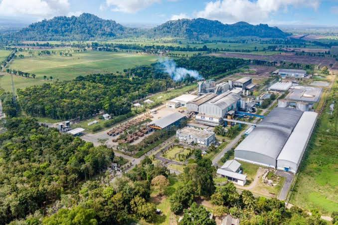
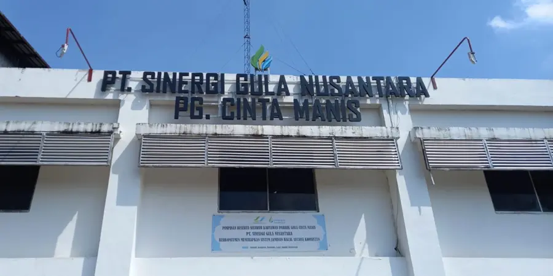

PT Sinergi Gula Nusantara
Mengenal lebih dekat profil, sejarah, dan perkembangan unit operasional PT Sinergi Gula Nusantara dalam memajukan industri gula nasional.
Pabrik Gula Cinta Manis

Pabrik Gula Cinta Manis
Pembangunan Proyek Pabrik Gula Cinta Manis yang berada di Ketiau, kabupaten Ogan ilir Sumatera selatan dengan kapasitas 4.000 TTH (ton Tebu per Hari) menggunakan proses sulfitasi ganda, ditenderkan secara serah kunci kepada rekanan dalam dan luar negeri.
Studi kelayakan pabrik gula tersebut diadakan pada tahun 1978, sesuai dengan Surat Menteri Pertanian RI no.688/Kpts/Org/8/1981 tanggal 11 Agustus 1981, PT. Perkebunan XXI-XXII (Persero) ditunjuk untuk mengelola Proyek Pabrik Gula Cinta Manis dengan lahan yang dicadangkan seluas ± 21.358 Ha.
PT. Perkebunan XXI-XXII yang Kantor Direksinya berkedudukan di Surabaya yang membawahi 14 Pabrik Gula di Jawa Timur, Lampung dan Sumatera Selatan. Sesuai dengan surat keputusan menteri Sekretaris Negara No. R 1595/TPPBPP/XI/1981 tanggal 30 November 1981, telah ditetapkan pemenang lelang pembangunan pabrik gula tersebut adalah MARUBENI CORP dari Jepang sebagai Main Contractor dengan PT Aneka Usaha Perkebunan sebagai Sub contractor dari Indonesia yang mengerjakan pekerjaan-pekerjaan pabrikasi, sipil, pemasangan dan pengangkutan.
Peletakan batu pertama pembangunan pabrik gula ini dilakukan pada tanggal 07 Agustus 1982 oleh Gubernur KDH Tk. I Provinsi Sumatera Selatan dan pembangunan dapat diselesaikan tepat pada waktunya dalam bulan Juni 1984, dilanjutkan dengan percobaan giling tanpa beban dengan hasil baik. Selanjutnya commissioning dimulai pada tanggal 17 Juni 1984 diteruskan dengan “performance test” untuk mengetahui kemampuan peralatan pabrik dilakukan dalam bulan Juli 1984 untuk kemudian diteruskan dengan giling perdana serta giling produksi pada tahun-tahun berikutnya. Pada tahun 1987 telah menggiling tebu dengan luasan areal 78.430,7 ha, yang terdiri dari Tanaman Tebu Rakyat dan Tanaman Tebu Sendiri dengan produksi mencapai 5.433.801 kuintal atau merupakan ± 25 % dari produksi gula Nasional.
Dalam usaha untuk meningkatkan produksi gula dengan melihat potensi yang ada, sejak tahun 1986 dilakukan usaha meningkatkan kapasitas giling pabrik menjadi 4.800 TTH. Usaha ini dibarengi dengan peningkatan intensifikasi di bidang teknologi yang lebih baik, misalnya pemilihan jenis tebu yang sesuai, pemakaian limbah pabrik serta usaha kearah pemberian air irigasi dengan jumlah karyawan PT Perkebunan XXI-XXII berjumlah 19.326 orang ditambah sejumlah tenaga borongan dan harian yang setiap tahunnya mencapai lebih dari 30.000 orang.
Melalui Akte Pendirian No. 01 tanggal 01 Maret 1990 Pabrik Gula statusnya menjadi PT. Perkebunan XXXI (Persero) yang berkantor pusat di Jln. Kol H. Burlian KM 9 Palembang Sumatera Selatan, pada tahun 1994 PT. Perkebunan XXXI (Persero) bergabung dengan PT. Perkebunan X (Persero) menjadi PT. Perkebunan X-XXXI (persero), selanjutnya pada tanggal 11 Maret 1996 dilakukan konsolidasi antara PT. Perkebunan X-XXXI (Persero) dengan Ex Proyek Pengembangan PT. Perkebunan IX (Persero) di Kabupaten Lahat Sumatera Selatan, ditambah Ex. Proyek Pengembangan PT. Perkebunan XXIII (Persero) di Bengkulu dengan Kantor Pusat di Jln. Teuku Umar No. 300 Bandar Lampung (PT Perkebunan Nusantara VII).
Pada tanggal 05 Juli 2018 dilakukan pembentukan PT. Buma Cima Nusantara (PT. BCN) yang terdiri dari PG Cinta Manis dan PG Bunga Mayang yang menjadi anak perusahaan dari PT. Perkebunan Nusantara VII. PG Cinta Manis dengan kemampuan produksi 5.500 TCD dan menghasilkan produksi Gula Kristal Putih (GKP) diproduksi dengan nama Gula Walini. Pada tanggal 10 Oktober 2022 Spin Off Pembentukan PT. Sinergi Gula Nusantara (PT. SGN) penggabungan seluruh Pabrik Gula di Indonesia yang dibawahi Holding Perkebunan Group.
PG. Cinta Manis salah satu Pabrik Gula dengan memproduksi Gula Kristal Putih kemasan Retail 1 Kg dan Kemasan Karungan 50 Kg dengan nama Gula Nusakita dengan sistem pengolahan menggunakan sulfitasi dan Quadruple Effect Evaporator dengan luasan yang terdiri dari seluruh bangunan Pabrik, Kantor, Peltek, QA dan Komplek Perumahan seluas 165.7 Ha.
Sampai dengan tahun 2023 Pabrik Gula Cinta Manis masih aktif beroperasi. Peningkatan kapasitas sudah dilakukan tahun 2010, penggantian beberapa peralatan pabrik (Cane Preparation, Evaporator, Vacuum Pan dan High Grade Fugal) meningkatkan kapasitas pabrik dari 4.000 TCD menjadi 5.500 TCD. Tahun 2015, dalam kerangka peningkatan kapasitas pabrik menuju 7.000 TCD sudah dilaksanakan pembangunan 1 Unit Boiler kapasitas 80 TPH yang direncanakan selanjutnya dengan penggantian Unit Mill, penambahan unit Rotary Vacuum Filter, Evaporator, High Grade Fugal dan Vacuum Pan.
Pabrik Gula Cinta Manis beralamat di Jalan Sultan Mahmud Badaruddin II, Desa Ketiau, Kecamatan Lubuk Keliat, Kabupaten Ogan Ilir Provinsi Sumatera Selatan.